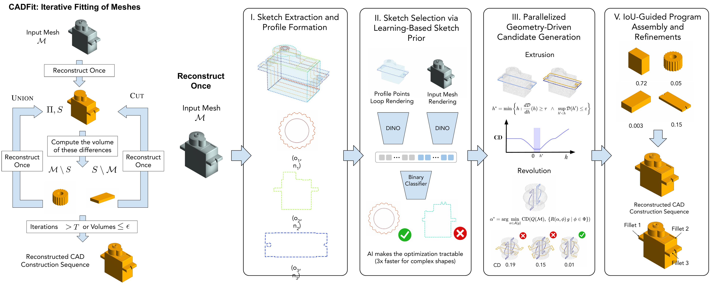
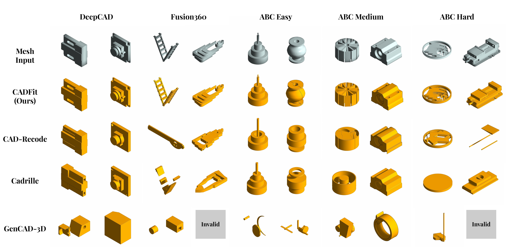
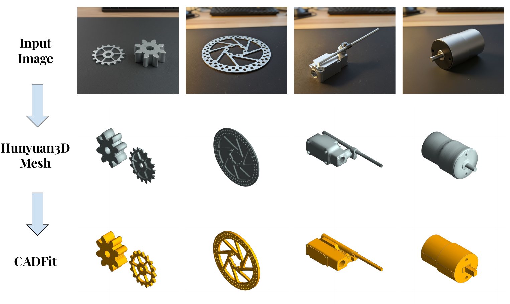
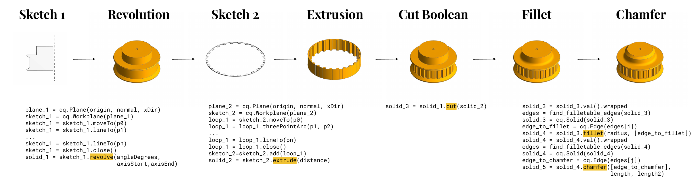

Despite recent progress, recovering parametric CAD construction sequences from geometric input — meshes or point clouds — remains a key challenge for design and manufacturing. Existing CAD reconstruction and generation methods are largely restricted either to difficult-to-edit formats (meshes, B-reps) or to simple sketch-and-extrude pipelines on low-complexity datasets.
We introduce CADFit, a hybrid optimization-based framework that recovers complex, editable CAD construction sequences from meshes by incrementally fitting and validating parametric operations using geometric feedback. Our approach formulates reconstruction as an IoU-driven optimization over structured, executable CAD programs, and supports a rich operator set — extrusions, revolutions, fillets, and chamfers — composed with Boolean union and cut.
Experiments on multiple CAD benchmarks (DeepCAD, Fusion360 Gallery, ABC) show that CADFit outperforms state-of-the-art mesh-to-CAD methods in volumetric IoU and Chamfer Distance, while substantially reducing the Invalid Ratio of reconstructed CAD programs — particularly for complex designs. We further present a multimodal pipeline that enables end-to-end reconstruction of CAD construction sequences from images by combining image-based geometry reconstruction with CADFit.

Given a watertight input mesh, CADFit extracts candidate sketch profiles from detected planar face clusters and axis-aligned slicing planes. For each profile it generates a small set of geometrically consistent extrusion and revolve candidates via one-sided Chamfer parameter sweeps. Candidates are then assembled into a compact base program through IoU-guided backward pruning, executed and validated by the CAD kernel at every step. A bounded number of residual reconstruction iterations stitch in finer features via Boolean union and cut, and a final pass recovers fillets and chamfers.

Qualitative reconstructions on DeepCAD, Fusion360, and ABC (easy / medium / hard). CADFit produces a valid, editable CAD program on every input where baselines either output Invalid or visibly diverge from the target geometry.

CADFit is agnostic to where the mesh comes from. Pairing it with a pretrained image-to-3D model — we use Hunyuan3D — and standard post-processing (watertight enforcement, Taubin smoothing, mesh decimation) gives a fully end-to-end image-to-CAD pipeline, with no retraining of CADFit.

Every CADFit run emits an executable CadQuery program that reproduces the solid using sketches, extrusions, revolutions, Boolean composition, and finishing features.
@article{nehme2026cadfit,
title={CADFit: Precise Mesh-to-CAD Program Generation with Hybrid Optimization},
author={Nehme, Ghadi and Whalen, Eamon and Ahmed, Faez},
journal={arXiv preprint arXiv:2605.01171},
year={2026}
}